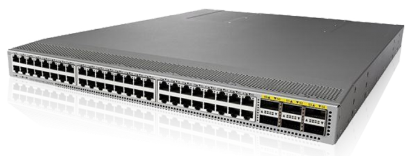

Centro de Datos
Infraestructura de red confiable, escalable y optimizada para cargas críticas.

Cisco Nexus Serie 9000
Switch para data centers modernos, con soporte para SDN y automatización completa.

Rendimiento, virtualización y automatización para entornos de nube híbrida y data center.
Infraestructura de red confiable, escalable y optimizada para cargas críticas.
Switch para data centers modernos, con soporte para SDN y automatización completa.
Conecte y gestione cargas en entornos locales y en la nube con flexibilidad total.
Solución para interconexión segura entre centros de datos y nubes públicas, con gestión centralizada.
Redes virtualizadas para eficiencia, segmentación y automatización avanzada.
Plataforma de red definida por software que simplifica la operación, segmentación y automatización del data center.
Protección integral, visibilidad y control inteligente en toda la infraestructura.
Solución de seguridad integral basada en políticas y automatización para entornos híbridos y multinube.
Compare arquitecturas de red según su carga de trabajo y entorno.
Solicite asesoríaImplementación, configuración y mantenimiento con expertos certificados.
Conozca nuestros servicios